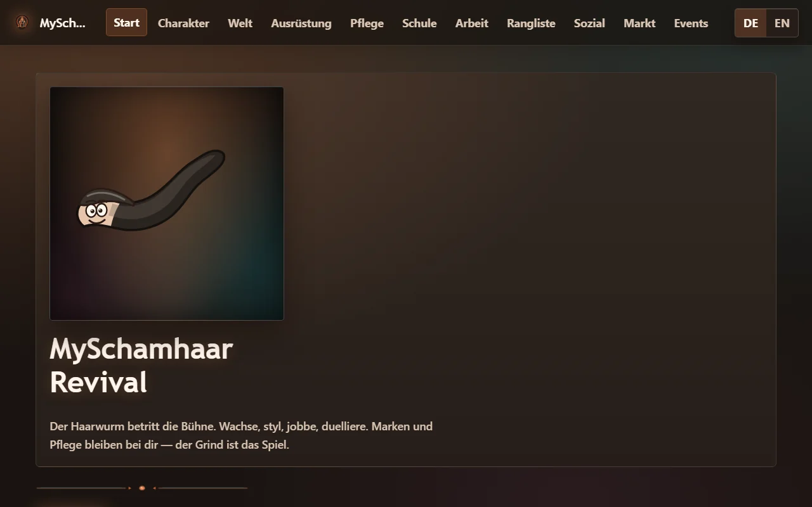

Systeme scannen. Expandieren.
Die Karte bleibt. Fortschritt sitzt auf dem Server, nicht in einer Session.
Gurgenbaba

Persistente Spiele, Multiplayer-Systeme, Frameworks. Keine wegwerfbaren Prototypen — Produkte, die weiterlaufen, wenn der Tab zu ist.
Flagship
Persistentes Browser-Strategiespiel. Kolonien, Flotten, Forschung, Allianzen, Ascension, Commander, LiveOps. Kein künstlicher Leveldeckel.
Die Karte bleibt. Fortschritt sitzt auf dem Server, nicht in einer Session.

Bewegung und Konflikt als laufender Weltzustand, nicht als einmaliger Fight-Screen.

World Boss und laufender Betrieb gehören zum Produkt, nicht zur Roadmap-Folie.

Klassen, Skills, Fortschritt — gebunden an den Account, nicht an einen Run.
Projects
Eigene IPs, ein Framework, ein Kundenauftrag. Jede Welt hat eigene Regeln. Gemeinsam ist ihnen Persistenz.

Persistentes Browser-Strategiespiel. Keine künstliche Levelgrenze. Ein Universum, das weiterläuft.

Top-down Space-Roguelite. Vier Ship Frames, persistente Progression, Ark Defense, Genesis Online bis 4 Spieler.

Clean-room Social Browser RPG. Sichtbares Haarwachstum, Pflege, Schule, Jobs, PvP, Gilden, Markt, Seasons.

Mobile-first Imbiss-Management. Schichten, Speisekarte, Weiterbildung, Ausrüstung, Großmarkt, Stadt.

Clean-room RedM RP/Survival-Core. Server-authoritative. Welt, Jobs und Shops sollen über ein Admin-Control-Plane laufen — nicht über ständige Dateiedits.
In action
Echte Oberflächen. Keine Moodboards.
Commission
Kein Gurgenbaba-IP. Ein Kundenprojekt, das dieselbe Systemarbeit außerhalb der eigenen Welten zeigt.

CLIENT WORK
Browser-Weltraumstrategie als Auftragsarbeit. FastAPI, React, PostgreSQL. Auth, Spezies, Gebäude, Tick-Produktion, Mining, Handel, Missionen, Forschung, Kolonisierung.
Systems
Der Unterschied sitzt hinter dem ersten spielbaren Build: Autorität, Persistenz, Betrieb.
Spielzustand, Combat, Inventar, Economy — serverseitig. Clients zeigen, sie besitzen die Welt nicht.
PostgreSQL, Migrationen, Accounts und Welten, die Sessions überleben.
WebSockets, Matchmaking, Räume, Host-Migration. Co-op ist kein Screenshot.
Railway, Cloudflare, CI, Performance, Admin-Tools, Seasons.
Gurgenbaba
Öffentliche Builds liegen bei den Projekten. Der Rest entsteht dort, wo Code, Spielsystem und Betrieb gleichzeitig gelöst werden müssen.